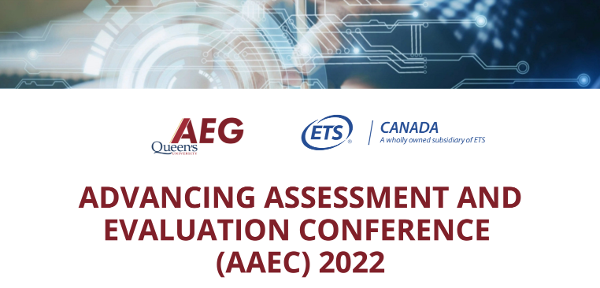

Theme 4 Promote Language Learning
4.1 Theme Overview

Description: The science of language learning has advanced in recent years. This panel was devoted to thinking about how innovations in assessment and evaluation can provide further insights into language learning and assessment and to consider the application of these innovations in everyday practice.
The following questions were intended to inspire and generate ideas. The speakers did not need to address the questions directly.
What new assessment and evaluation approaches can be used to promote language learning?
How is the role of assessment of language learning changing?
What are important considerations for language learning and assessment in our current context?
What variations in language learning strategies exist and how do these mirror assessment and evaluation practices?
4.2 An Ecosystem: Symbiosis Among Learning, Teaching, and Assessment
Author: Liying Cheng, PhD
Institution: Queen’s University
Recommended Citation:
Cheng, L. (2022, January 27-28). An Ecosystem: Symbiosis Among Learning, Teaching, and Assessment [Paper presentation]. Advancing Assessment and Evaluation Virtual Conference: Queen’s University Assessment and Evaluation Group (AEG) and Educational Testing Services (ETS), Kingston, Ontario, Canada.
Let us imagine an ecosystem of language learning and learners where a symbiosis among elements of learning, teaching and assessment is achieved – living, alive, and sustainable. Symbiosis is a biology term to describe “the art of living together” where the relationship or interaction among different or dissimilar organisms benefit from each other. In educational assessment, this relationship is referred to as washback and consequential validity where we explore the symbiotic relationship among learning, teaching and assessment in supporting our learners and their learning. And that is the research that I have been working on since my doctoral dissertation!
We now live in a very different world. The COVID-19 global pandemic, which we are still in the middle of, threatens our very survival and ‘thrival.’ This pandemic has taught us hard lessons, and everything we thought we knew about our world and about our language learning has to be re-examined. We must reconceptualise learning, teaching and assessment (testing) individually, more importantly, together of the symbiotic relationships among the three. The current global travel restrictions (which for some countries may remain for a long time) require us to carefully consider the major changes in globalisation, internationalisation, and migration (transmigration) in relation to assessment (testing). Further, the geopolitics of assessment (Cheng, 2018, Volante, et. al., 2020) heightens the power of assessment (testing) in a given society, often leading to educational inequities and resentment toward assessment and testing.
All of these changes are happening at the same time as the exponential growth and development of artificial intelligence, natural language processing, and machine learning. We are facing vast opportunities and challenges to language learning, whether it is the first language learning, additional (second and foreign) language learning, bilingual and multilingual language learning in relation to teaching and assessment. The future of language learning and learners will redefine language constructs, assessment, and technology, challenge us to build an ecosystem where symbiosis could be achieved through a community or group of organic entities, within which all educational stakeholders – humans and machines – interact with each other in a symbiotic and mutually supportive environment.
I will illustrate this ecosystem using two potential areas of studies. The first project focuses on the system of learning (machine learning), teaching, and testing for supporting the language learning of international educated nurses. The second project turns to our young learners with whom we explore building their learning capacity in taking control, responsibility, and pride from an organic point of view bridging assessment and self-regulated learning.
Building Canada’s Healthcare One Nurse at a Time: An Ecological System for Testing, Learning, and Teaching
The global COVID-19 pandemic changed our Canadian healthcare system, which has been stretched to its breaking point. Even before the pandemic, there was a serious shortage of registered nurses in Canada (Ariste et al., 2019); now, 1 in 3 Ontario nurses are considering leaving the profession due to the pandemic (CBC News, 2021). Hiring Internationally Educated Nurses (IENs) is essential to address this critical shortage (Boateng, 2015; Covell et al., 2017). However, IENs must pass a recertification test to be eligible to practice in Canada (Canadian Nurses Association, 2021), as well as demonstrate proficiency in English or French (e.g., British Columbia College of Nursing Professionals, 2019; College of Nurses of Ontario, 2020). Thus, while IENs have the potential to become key contributors to Canadian healthcare, they face multiple systemic barriers to recertification, with language posing a central challenge.
To continue our pandemic disrupted research on supporting IENs to accelerate their language proficiency for recertification, we propose to create an ecological system for testing, learning, and teaching as our innovative research methodologies. In this ecosystem, we challenge the conventional models where testing, learning, and teaching are conducted separately and where test developers and raters, IENs as test-takers, nursing bridging educators, language teachers, and researchers work in silos. We will build this system via an online supportive infrastructure so the collection of research data will be iterative, interactive, and symbiotic alongside testing, learning, and teaching data. Furthermore, this system can collect data from these stakeholders individually, within one group of the stakeholders, and from the interactions among all the stakeholders together, while at the same time this system is 100% open-access and virtual worldwide. We aim to create the first of its kind integrated teaching, learning, and testing ecosystem housed in Canada, serving IENs and many other internationally educated professionals (IEPs) for a stronger Canadian immigration mosaic across all professions and industries, including healthcare.
Learning to Love Learning: Taking Control, Responsibility, and Pride through Self-Regulated Learning and Assessment
The worldwide impact of the COVID-19 pandemic on education has been largely impossible to imagine, predict, and measure. As a result, traditional modes and methods of learning and assessment have been challenged, and the quality of our education systems has been questioned – on a global scale. This unprecedented disruption to education has had a tremendous negative impact on the learning of all students, particularly our young elementary school students who are most vulnerable (Timmons et al., 2021). At the same time, their parents are being put to a strenuous test, juggling their work duties with their parenting responsibilities – all in a full-time capacity. These global challenges faced by parents and children have highlighted and magnified the importance of students becoming self-regulated learners. A self-regulated learner has the capacity to monitor their own learning, set goals for themselves, establish plans and access resources to achieve their goals, and assess their own progress. Self-regulated learning (SRL), a fundamental goal of our education systems, ultimately allows a student to take control, responsibility, and pride in their learning – driving their learning forward, not only during schooling but throughout their entire lives. Importantly, this ability of students, and all citizens, to self-regulate has been one of the central indicators for success during the global COVID-19 pandemic (Pelikan et al., 2021; Santamaría-Vázquez et al., 2021). However, the global pandemic has elucidated the diversity of socio-cultural values embedded in learning and assessment across educational systems internationally, including how SRL is endorsed and supported. The proposed study serves to promote this essential education goal of SRL by leveraging prior literature that predicts classroom assessment practices as a powerful approach to promote the development of SRL in young learners (DeLuca et al., 2020). The overall goal is to examine how SRL as a quality assessment strategy can support elementary students in Canada and China to take control, responsibility, and pride in their learning.
References
Ariste, R., Béjaoui, A., & Dauphin, A. (2019). Critical analysis of nurses’ labour market effectiveness in Canada: The hidden aspects of the shortage. The International Journal of Health Planning and Management, 34(4), 1144-1154. https://doi.org/10.1002/hpm.2772
Boateng, G. O. (2015). Exploring the career pathways, professional integration, and lived experiences of regulated nurses in Ontario, Canada [Unpublished doctoral dissertation]. The University of Western Ontario.
British Columbia College of Nursing Professionals. (2019). English requirements. Internationally Educated Nurses. https://www.bccnp.ca/Registration/RN_NP/RNApplication/InternationalEN/Pages/Englishrequirements.aspx
Canadian Nurses Association. (2021). Work in Canada. Retrieved October 8, 2021, https://www.cna-aiic.ca/en/nursing-practice/career-development/work-in-canada
CBC News. (2021). 1 in 3 Ontario registered practical nurses considering quitting due to pandemic, poll suggests. Retrieved August 22, 2021, https://www.cbc.ca/news/canada/toronto/nurses-ontario-covid-19-burnout-survey-1.5890799
Cheng. L. (2018). Geopolitics of assessment. In S. Abrar-ul-Hassan (Ed.), TESOL encyclopedia of English language teaching: Teaching English as an international language. Hoboken, NJ: John Wiley & Sons. https://doi.org/10.1002/9781118784235.eelt0814
College of Nurses of Ontario. (2020). In-depth: Language proficiency. Registration Requirements. https://www.cno.org/en/become-a-nurse/registration-requirements/language-proficiency/in-depth-language-proficiency/
Covell, C. L., Primeau, M. D., Kilpatrick, K., & St-Pierre, I. (2017). Internationally educated nurses in Canada: Predictors of workforce integration. Human Resources for Health, 15(1), 1-16. https://doi.org/10.1186/s12960-017-0201-8
DeLuca, C., Pyle, A., Braund, H., & Faith, L. (2020). Leveraging assessment to promote kindergarten learners’ independence and self-regulation within play-based classrooms. Assessment in Education: Principles, Policy & Practice, 27(4), 394-415. doi:10.1080/0969594X.2020.1719033
Pelikan, E.R., Lüftenegger, M., Holzer, J. et al. (2021). Learning during COVID-19: The role of self-regulated learning, motivation, and procrastination for perceived competence. Z Erziehungswiss, 24, 393–418. https://doi.org/10.1007/s11618-021-01002-x
Santamaría-Vázquez, M.; Del Líbano, M.; Martínez-Lezaun, I.; Ortiz-Huerta, J.H. Self-Regulation of motivation and confinement by COVID-19: A study in Spanish university students. (2021). Sustainability, 13, 5435. https://doi.org/ 10.3390/su13105435
Timmons, K., Cooper, A., Bozek, E., & Braund, H. (2021). The impacts of COVID-19 on early childhood education: Capturing the unique challenges associated with remote teaching and learning in K-2. Early Childhood Educational Journal, 49, 887-901. https://doi.org/10.1007/s10643-021-01207-z
Volante, L., DeLuca, C., Adie, L., Baker, E., Harju‐Luukkainen, H., Heritage, M., Schneider, C., Stobart, G., Tan, K. and Wyatt‐Smith, C. (2020), Synergy and Tension between Large‐Scale and Classroom Assessment: International Trends. Educational Measurement: Issues and Practice, 39: 21-29.
4.3 AI Assisted Spoken Language Learning for mobile and computer applications
Author: Rutuja Ubale
Organization: Educational Testing Service (ETS)
Recommended Citation:
Ubale, R. (2022, January 27-28). AI Assisted Spoken Language Learning for mobile and computer applications [Paper presentation]. Advancing Assessment and Evaluation Virtual Conference: Queen’s University Assessment and Evaluation Group (AEG) and Educational Testing Services (ETS), Kingston, Ontario, Canada.
The COVID-19 pandemic has impacted every aspect of our lives. This includes requiring students to engage in remote learning from home, a need that we were perhaps not very well prepared for in the pre-pandemic times in terms of technology which had suddenly become a necessity. Teachers have been trying to invent ways of bringing more engaging instruction, create targeted practice and evaluate student homework. Several E-learning and language learning platforms like Duolingo, Busuu, ELSA Speak, etc. saw tremendous increase in the number of users over the last year.
AI-powered apps can provide personalized feedback and learning by recognizing learner’s strengths and weaknesses using machine learning algorithms on written and spoken responses. However, students can be impeded by negative feedback which is not constructive enough to be useful to inform their learning journey.
Challenges in Language Learning:
- Lack of motivation
Lessons can be too repetitive and teachers often feel challenged to create new interesting practice material. Learners can get bored of repetitive content in learning apps and begin disengaging leading to poor user retention rates. The main reasons for it are too long lessons, boring exercises, unfitting difficulty level, insufficient rules explanation, or absence of personalization. Using AI and natural language processing technology can enable automatic generation of a diversity of exercise types to alter different types of activities and avoid boredom. Placement test can be used to detect the current level and start learning from that point. Creation of customized and adaptive learning paths to offer only relevant materials to master based on the learner’s skill acquisition can enable better user engagement and learning experience. Gamified environments that include goal-setting like achievement badge, daily streaks, a level, a position on a leaderboard, opportunities for social interaction and competition with adaptive leaderboards as per studies [1] lead to stronger motivation and increased performance.
- Knowledge Retention
In app based learning, newly learned information can be easily forgotten with continuous repeated practice as users continue to see newer practice material and concepts. It has been observed in research that data-driven spaced repetition to repeat new information over short intervals of time leads to better knowledge retention as opposed to massed practice or cramming. The spaced repetition technique has been adopted by several language learning apps including Duolingo [3] that reportedly saw an increase in learner engagement by 12% in an operational user study. Regular AI based automated assessments and continuous feedback to detect learners’ knowledge gaps and customized learning path with the concepts to practice and master can also help improve knowledge acquisition and retention.
- Overcoming language barriers
Many learners don’t have access to real life scenarios while mastering a language for example native speakers of a language that they can speak with to practice real-life conversations and improve their confidence speaking in the language being learnt. Speech recognition can help learners to engage in speaking, even without a partner being available. AI can be used to simulate real-life conversational practice with chatbots using speech recognition, natural language understanding as well as immersive learning experience with augmented reality and virtual reality technology. Social networking in app to allow interaction with fellow learners, peers or native speakers can also provide real-life usage scenarios.
- Targeted and actionable feedback
In second language (L2) learning solutions, intuitive learning is good at the beginning when concepts and exercises are simple. ASR based language learning solutions can provide instant feedback on the student’s speaking performance. But once the exercises become more complex, learners need deeper feedback and explanations for their mistakes. Without such support a learner will always repeat the same mistakes and be confused on how to move forward with their learning. Here’s a quote from the review from LearnJam on the Speaking Pal, a spoken language learning platform ‘The ‘feedback’ consisted of showing me which words I’d said ‘well’ (in green) and which ones I needed to work on (red). There doesn’t seem to be an explanation as to what in particular the problem is with my speaking, so I’m none the wiser as to how to improve. I just tried to shout it a couple of times to be sure’ [4]. One solution is scaffolded support to give on-demand explanation during exercises or in case of mistakes.
Technologies used in spoken language learning and teaching
Automatic Speech Recognition:
Use of automatic speech recognition allows the learners to converse with computer/ mobile phone. ASR turns speech into written text by using a speech recognition engine. Speech recognition engines are software systems that take users’ speech as audio input (i.e. digital audio signals from a microphone or recording) and process the stream of sound into individual sounds, vowels and consonants, lexical items and outputs a transcription of the user’s speech. This transcription can then be presented to user as an indication of what the user said or be used as input to speech and natural language processing systems to extract deeper evaluation of the user’s speech to provide feedback on grammar and content. Speech recognition systems can be used to also measure the speed at which the learners speak, and rate of speech has been shown to correlate with speaker proficiency.
Pronunciation Error Detection:
One worthy area of focus of speech technology is pronunciation. Voice-interactive pronunciation tutors can prompt students to repeat spoken words and phrases or to read aloud sentences in the target language for the purpose of practicing both the sounds and the intonation of the language. The key to teaching pronunciation successfully is corrective feedback, more specifically, a type of feedback that does not rely on the student’s own perception. Automatic pronunciation scoring can serve as a means to evaluate spoken learner productions in terms of fluency, segmental quality (phonemes) and supra-segmental features (intonation). The automatically generated proficiency score can then be used as a basis for providing other modes of corrective feedback. These systems can be built by evaluating the quality of the user’s speech by first of all extracting information from audio signals that are supplied in machine learning or deep learning models to identify how close the user’s production was to that of a native speaker, whether there is L1 interference (where the L1 is known) and whether L2 phones or specific production patterns are missing from the speech.
Speech synthesis:
While computers can listen to, understand and use what we are saying, at least to a certain extent they can also be used to reply to users with feedback or to teach the users specific usage or pronunciation. This is done using speech synthesis software otherwise known as text-to-speech (TTS) engines. This uses the basic audio features of a computer to create spoken audio output from written text. While the goal of TTS systems is mimic human speech, most state-of-the-art TTS systems to date still sound a bit artificial and a lot of most recent research has been targeted at generating more natural and emotional speech synthesis.
Automated assessment and feedback engines:
Evaluating students’ speech output, generating tests and assignments and giving individual feedback is one of the most time-consuming tasks that a teacher can face. Speech technology can be used to automate the evaluation of learner’s spoken production. Learner’s speech can be fed through the same speech recognition and analysis systems followed by a machine or deep learning based scoring and feedback model to display actionable insights to users. The speech is analyzed both in terms of its content (i.e. what is in the transcribed text) and its pronunciation and prosody features (i.e. what it sounds like in the audio version of the speech).
Summary
We’ve looked at the different challenges in building efficient and effective language learning applications using AI and what features popular language learning apps have developed to improve user engagement. Additionally, we also discuss different speech technologies that are leveraged in spoken language learning solutions to assess, evaluate and generate targeted feedback for learners to help them advance in their learning journey.
References:
The Effect of Achievement Badges on Students’ Behavior: An Empirical Study in a University-Level Computer Science Course
H. Ebbinghaus. 1885. Memory: A Contribution to Experimental Psychology. Teachers College, Columbia University, New York, NY, USA.
Settles, B. and Meeder, B., 2016, August. A trainable spaced repetition model for language learning. In Proceedings of the 54th annual meeting of the association for computational linguistics (volume 1: long papers) (pp. 1848-1858).
Gifford, T. (2013, November). Speech Recognition apps for ELT: SpeakingPal English tutor. ELTjam. Retrieved from https://eltjam.com/speechrecognition-apps-for-elt-speakingpal-englishtutor
4.4 The Power of Diagnostic Scaffolding in Technology-Rich Learning-Oriented Assessment Environments
Author: Eunice Eunhee Jang, PhD
Institution: University of Toronto
Recommended Citation:
Jang, E. E. (2022, January 27-28). The Power of Diagnostic Scaffolding in Technology-Rich Learning-Oriented Assessment Environments [Paper presentation]. Advancing Assessment and Evaluation Virtual Conference: Queen’s University Assessment and Evaluation Group (AEG) and Educational Testing Services (ETS), Kingston, Ontario, Canada.
Since the introduction of DIALANG (Alderson & Huhta, 2005), technological advances have made possible timely, dynamic, and multi-agent delivery of assessment results and feedback for learners. In particular, new horizons have opened with performative task designs. They are infused with authentic audio and video stimuli (Wagner, 2008), spontaneous performance modes, adaptive scaffolding (Azevedo, Cromley, & Seibert, 2004; Deville & Chalhoub-Deville, 1999), and simultaneous assessment of integrative skills through multidimensional mastery skill profiling (Jang, 2005; Leighton & Gierl, 2007; Yan, Almond, & Mislevy, 2004).
Afforded by rapid advances in technological innovations, natural language processing and machine learning are increasingly used to recognize, interpret, and generate human languages in productive skills, such as oral (Evanini, Heilman, Wang, & Blanchard, 2015; Zechner, Higgins, Xi, & Williamson, 2009) and written abilities (Burstein, Chodorow, & Leacock, 2004; Crossley, Kyle, & McNamara, 2016). Real-time data processing allows for timely and adaptive feedback for students, which can be used for expert, interactive, and self-scaffolding during task performance (Xi, 2010). Automated feedback systems can transform learning-oriented assessment by integrating instantaneous performance feedback into the context of real-time learning.
Argument-based validity theories offer guiding principles for evaluating automated scoring and feedback systems (Chapelle & Chung, 2010; Kane, 2013). While evaluation, generalization, and explanation inferences are central to the validity argument for large-scale standardized testing programs, utilization inferences are especially critical for teaching and learning. Interpretive arguments concerning the utilization inference typically seek evidence to support the claim that automated feedback positively impacts student learning.
Previous research on feedback has focused chiefly on the impact of feedback formats (Ellis, Loewen, & Erlam, 2006; Ferris, 2010). Little research other than research on dynamic assessment (Lantolf & Poehner, 2004; Leung, 2007) has addressed its scaffolding mechanisms in assessing productive skills in technology-rich environments. Mediation through feedback during task performance can be distinct from end-of-task feedback as it provides simultaneous diagnosis and scaffolding (Lantolf & Poehner, 2008). It differs further by an agency (Holton & Clarke, 2006). While the mediator leads expert scaffolding to promote conceptual learning or skill development, reciprocal scaffolding can occur collaboratively through peer-to-peer or human-machine interactions. In addition, self-scaffolding can take place through learners’ metacognitive control.
In this talk, I examine the mechanisms of scaffolding based on automated diagnostic feedback in BalanceAI, a technology-rich learning and assessment platform. It leverages automated scoring to provide real-time diagnostic feedback for teachers and students in four core areas: students’ psychoeducational beliefs, literacy (writing and reading comprehension), oral language, and cognitive reasoning. The component of psychoeducational beliefs includes student self-assessment of self-efficacy, goal orientation, self-regulation, and grit. The literacy component includes a series of reading and writing activities. Five reading testlets include reading passages of which readability varies from Grades 2 to 8 and engage students in innovative tasks beyond typical reading comprehension questions. Students and teachers receive skill mastery profiles on their respective dashboards. The writing component engages students in a series of writing activities, including watching video stimuli, prewriting, drafting an essay, revising it, and self-assessment of writing skills after submitting the revised essay. Students’ essays are automatically scored over five analytic criteria. Teachers have an option to evaluate their students’ essays as well. The writing dashboard provides automated essay scores alongside teachers’ assessments. The third component of BalanceAI includes six different oral and cognitive reasoning tasks. Students’ reading fluency is automatically scored based on their read- aloud. Oral language proficiency is automatically scored based on picture description and story- retell tasks. Phonological awareness is assessed using elision tasks. Two cognitive reasoning tasks assess students’ short-term memory capacity and fluid reasoning ability.
The BalanceAI assessment system has been used by various teachers, educators, and students in different contexts—the first field research involved over 200 students in elementary schools. Over 500 students have used it in classrooms for the past two years. For the past year, community outreach programs have used it as a digital support tool for students from urban shelters, refugees, language learners, and other students with limited learning opportunities due to school closure during the pandemic.
Individual students completed 8-10 one-to-one sessions in the community outreach program. Tutors received extensive training on the theoretical grounds of target constructs, interpretation of real-time performance results, and diagnostic scaffolding before, during and after task performance. Some of the diagnostic scaffolding activities included verbalizing thoughts, setting goals, identifying own errors, and practicing skills identified through goal- setting.
In seeking validity evidence to support the effect of diagnostic scaffolding in the community outreach program, aggregating results across individuals deem problematic because of questionable assumptions about data properties and contextual variations. Dynamic complexity theory offers an alternative perspective for understanding a feedback mechanism as its cause and effect are often nuanced and complex (Larsen-Freeman, 2011; Wolf-Branigin, 2013). I examine three central characteristics of dynamic complexity theory applied to the BalanceAI learning context. They include self-organizing agency, co-adaptation, and sensitivity of initial conditions.
Self-organizing agency
In general, living agents, including human beings, self-organize their systems (Mainzer, 2007). How do self-organizing learners look? Self-organized learning involves:
Initiating and organizing own learning.
Aligning individual learning with larger goals.
Being self-aware of their strengths and weaknesses.
Seeking feedback.
Regulating behaviours.
Adapting to changing environments.
This iterative self-organizing process is called ‘soft-assembly’ (Larsen-Freeman, 2011; Thelen & Smith, 1994). As learners engage with learning-oriented tasks and receive real-time feedback, they constantly consider options and constraints and assemble resources dynamically.
Co-adaptation
The BalanceAI learning-oriented digital assessment platform is intended to redesign the relationship between learning and assessment and facilitate dynamical co-adaptions between agents. As learners interact with their teacher or tutor, their cognitive, affective, and metacognitive resources are altered, the agents experience ‘coupling of complex systems’ (Thelen & Smith, 1994). Actions taken as a response to various task features lead to emerging patterns in learning. This iterative co-adaptation process prompts the emergence of stable patterns from local learning.
The edge of chaos
Students’ initial conditions matter significantly. Change in learning occurs gradually in nonlinear patterns. Changes are not necessarily proportionally subject to the dosage of causes due to their sensitivity to initial conditions. Complex systems are chaotic and dynamical as they are susceptible to initial conditions. That sensitivity is known as a butterfly effect, referring to small changes over time in the initial state that leads to a more significant and unpredictable impact (Lorenz, 1963). For example, a learner who struggles with writing experiences assistive technology that translates her speech to text first. The surprise that the learner experiences with the assistive technology may lead to dramatic changes in her cognitive growth.
In closing, automated feedback systems provide an opportunity to create a dynamic learning system in which learners develop self-organizing principles, assemble resources, and adapt to their own and external contexts. Individual differences in initial conditions play a critical role as nonlinear patterns emerge dynamically. Automated diagnostic feedback systems provide critical real-time input for co-adaptive interactions among agents.
References
Alders-on, J. C., & Huhta, A. (2005). The development of a suite of computer-based diagnostic tests based on the Common European Framework. Language Testing, 22(3), 301-320.
Azevedo, R., Cromley, J. G., & Seibert, D. (2004). Does adaptive scaffolding facilitate students’ ability to regulate their learning with hypermedia?. Contemporary Educational Psychology, 29(3), 344-370.
Burstein, J., Chodorow, M., & Leacock, C. (2004). Automated essay evaluation: The Criterion online writing service. Ai Magazine, 25(3), 27-27.
Chalhoub–Deville, M., & Deville, C. (1999). Computer adaptive testing in second language contexts. Annual Review of Applied Linguistics, 19, 273-299.
Chapelle, C. A., & Chung, Y. R. (2010). The promise of NLP and speech processing technologies in language assessment. Language Testing, 27(3), 301-315.
Crossley, S. A., Kyle, K., & McNamara, D. S. (2016). The tool for the automatic analysis of text cohesion (TAACO): Automatic assessment of local, global, and text cohesion. Behavior Research Methods, 48(4), 1227-1237.
Ellis, R., Loewen, S., & Erlam, R. (2006). Implicit and explicit corrective feedback and the acquisition of L2 grammar. Studies in Second Language Acquisition, 28(2), 339-368.
Evanini, K., Heilman, M., Wang, X., & Blanchard, D. (2015). Automated scoring for the TOEFL Junior® Comprehensive writing and speaking test. ETS Research Report Series, 2015(1), 1-11.
Ferris, D. R. (2010). Second language writing research and written corrective feedback in SLA: Intersections and practical applications. Studies in Second Language Acquisition, 32(2), 181-201.
Holton, D.A., & Clarke, D. (2006). Scaffolding and metacognition. International Journal of Mathematical Education in Science and Technology, 37, 127-143.
Jang, E. E. (2005). A validity narrative: Effects of reading skills diagnosis on teaching and learning in the context of NG TOEFL. University of Illinois at Urbana-Champaign.
Kane, M. (2013). The argument-based approach to validation. School Psychology Review, 42(4), 448-457.
Larsen-Freeman, D. (2011). A complexity theory approach to second language development/acquisition. In Atkinson, D. (Ed.), Alternative approaches to second language acquisition (pp. 60-84). Routledge.
Leighton, J., & Gierl, M. (Eds.). (2007). Cognitive diagnostic assessment for education: Theory and applications. Cambridge University Press.
Leung, C. (2007). Dynamic assessment: Assessment for and as teaching?. Language Assessment Quarterly, 4(3), 257-278.
Lorenz, E. N. (1963). Deterministic nonperiodic flow. Journal of the Atmospheric Sciences, 20(2), 130-141.
Mainzer, K. (2007). Thinking in complexity: The computational dynamics of matter, mind, and mankind. Springer Science & Business Media.
Poehner, M. E., & Lantolf, J. P. (2005). Dynamic assessment in the language classroom. Language Teaching Research, 9(3), 233-265.
Thelen, E., & Smith, L. B. (1994). A dynamic systems approach to the development of cognition and action. The MIT Press.
Wagner, E. (2008). Video listening tests: What are they measuring?. Language Assessment Quarterly, 5(3), 218-243.
Wolf-Branigin, M. (2013). Using complexity theory for research and program evaluation. Oxford University Press.
Xi, X. (2010). Automated scoring and feedback systems: Where are we and where are we heading?. Language Testing, 27(3), 291-300.
Yan, D., Almond, R., & Mislevy, R. (2004). A comparison of two models for cognitive diagnosis. ETS Research Report Series, 2004(1), i-33.
Zechner, K., Higgins, D., Xi, X., & Williamson, D. M. (2009). Automatic scoring of non-native spontaneous speech in tests of spoken English. Speech Communication, 51(10), 883-895.
4.5 Reflections on incorporating an anti-racist pedagogy into a language testing and assessment course: A critical need for more research
Author: Christine Doe, PhD
Institution: Mount Saint Vincent University
Recommended Citation:
Doe, C. (2022, January 27-28). Reflections on incorporating an anti-racist pedagogy into a language testing and assessment course: A critical need for more research [Paper presentation]. Advancing Assessment and Evaluation Virtual Conference: Queen’s University Assessment and Evaluation Group (AEG) and Educational Testing Services (ETS), Kingston, Ontario, Canada.
This presentation considers my experience of incorporating an anti-racist pedagogy into a language testing course for the Fall of 2021. I am presenting this topic to respond to how the field of assessment and evaluation can better promote language learning. The reason for this is two-fold. First, like any research field, language testing and assessment must respond to the call of taking a critical stance on racism (Kubota, 2019). Second, teachers need to facilitate and promote language learning opportunities based on culturally responsive and appropriate assessments (Esch, Motha & Kubota, 2020). Thus, through classroom language assessment training from an anti-racist pedagogy, pre-service and in-service teachers can adequately meet the needs of their students in using appropriate language assessment practices.
There is a need for critical pedagogies that dismantle the systematic racism entrenched throughout all levels of education (e.g., Kishimoto, 2018; Mayorga & Picower, 2017; Reddington, Theunissen & MeDrano, 2021). As someone teaching in education, the use of critical pedagogical lens is becoming more mainstream. To adequately prepare pre-service teachers, I needed to incorporate anti-racism education into my teaching and model it (Mayorga & Picower, 2017). Promoting and fighting for equity is no longer on the fringes or the sole responsibility of BIPOC and other equity-seeking groups or subjects focused on social justice and equity. Thus, it was essential to incorporate an anti-racist pedagogy into my preparation and teaching of the Fall 2021 Language Testing and Assessment course. Anti-racist pedagogy in a higher education setting, as defined by Kishimoto (2018), includes three components of (1) integrating the topics of race and inequality throughout the course, (2) ensuring that the ‘how’ of teaching comes from an anti-racist pedagogy, and (3) doing activities beyond the classroom to promote anti-racist efforts throughout the campus.
For the purposes of this presentation, I aim to do two things. First, to share my preliminary findings of searching the language testing literature for the topics of race and inequality (i.e., component one of the anti-racist pedagogy). And second, to comment on some strategies for incorporating an anti-racist pedagogy into a language testing course (i.e., component two of the anti-racist pedagogy). In my initial search for resources in the summer of 2021, I looked to the key handbooks on language testing, such as the 2021 Handbook of Second Language Acquisition and Language Testing by Paula Winke and Tineke Brunfaut and searches through key databases like the Linguistics and Language Behavior Abstracts (LLBA). I was surprised to find limited resources on the topic, which inspired the topic for this presentation. To prepare for this presentation, I employed a more systematic search strategy to identify literature from an anti-racist framework.
I searched three key sources of research on language testing and assessment: (1) the 1999-2020 ILTA bibliography, (2) the LLBA database, and (3) Education Research Complete (EBSCO). I selected six broad search categories: racism (variations: race and racist); social justice (variations: justice, equity, critical language testing), Critical Race Theory, anti-racist frameworks (variations: anti-racist pedagogy/education, anti-Black racism, anti-Asian racism, and anti-Indigenous racism); multilingual (variations: bilingual, translanguaging), and multiculturalism (variations: intercultural, diversity/diverse). For every search in the two databases of LLBA and Education Research Complete, the Boolean phrase (“language testing” or “language assessment”) was used in combination with each term for the six search categories in the abstract or title field. My search parameters also included the dates of 1991 to 2022 to capture 20 years of publication history. Since the analysis was conducted in January of 2022, I did not count 2022 as a publication year, but I did include it to be as exhaustive as possible. I then did a third round of searching in LLBA to look for the search categories specifically in language testing and assessment journals. To do this, I used the terms “language testing” and “language assessment” for publication title to capture the research articles from two key journals of the field: Language Testing and Language Assessment Quarterly. With each search result, I reviewed the titles and abstracts to make sure they fit with the categories considered. For the interest of time, when the search results had 20 or less I was able to see if there were any duplications. However, I was not able to do the same when the counts were higher. Thus, it is important to recognize that the search and analysis I conducted did not have the rigour of a systematic review (Macaro, 2019). Nevertheless, I do believe there can be some broad observations made from the preliminary findings.
Similar to my findings this past summer, I found no resources that related to research from a Critical Race Theory (Dixson & Rousseau, 2016) perspective or any form of anti-racist pedagogy/education framework. Within the search category of race, I was able to find four articles and one PhD Dissertation that considered the topic of race as it related to inequity (Blackledge, 2006; Fleming, 2016; Hammond, 2019; McNamara, 2009; Milani, 2008; Sterzuk, 2007). Only one of the resources (McNamara, 2009) was from a language testing journal. It is concerning that there were so few research resources with the topic of race and racism, which was in contrast to the over 20 articles on the topics of social justice, equity and fairness. Interestingly, it was most productive to search for social justice and equity category within the journals that had language testing or language assessment in the title: social justice (5), justice (12), equity (7), critical language testing (3). The number of articles identified under the social justice category is not surprising considering the more than 15 years where there has been a push and call for the social dimension of language testing (McNamara & Roever, 2006). It should be noted that for the search of the literature, I only included the search terms for the title and abstract, and for the ILTA bibliography it was only the title. If I had conducted the searches with the terms in the full text field, I would have identified more articles. For instance, the search for the race category did not identify the introduction by Schissel and Khan (2021) for the virtual special issue in the journal Language Testing, because the introduction did not include an abstract or have race in the title. However, Schissel and Khan do provide a thought-provoking commentary on the state of the field of language testing and the need to consider language testing research from anti-oppressive frameworks.
Overall, these preliminary findings highlight how the field needs to expand language testing research and test use to include anti-oppressive research theories, such as Critical Race Theory (Dixson & Rousseau, 2016). Further, the field needs to examine and expand the discussions on how to employ anti-racist pedagogies into language testing training. This presentation will report on my initial searches of looking for research and resources, the observations made from my search, and the implications for teaching a language testing and assessment course from an anti-racist pedagogy. To conclude the presentation, I will pose some questions to the audience to gain their thoughts and comments about how to address the gaps in the literature.
References
Blackledge, A. (2006). The racialization of language in British political discourse. Critical Discourse Studies, 3(1), 61-79.
Dixson, A. D., & Rousseau, C. K. (2016). Critical race theory in education: All god’s children got a song. New York: Routledge.
Fleming, D. (2015). Citizenship and race in second-language education. Journal of Multilingual and Multicultural Development, 36(1), 42-52.
Hammond, J. W. (2019). Making our invisible racial agendas visible: Race talk in Assessing Writing, 1994–2018. Special Issue: Framing the Future of Writing Assessment, 42, 100425. https://doi.org/10.1016/j.asw.2019.100425
Kishimoto, K. (2018) Anti-racist pedagogy: from faculty’s self-reflection to organizing within and beyond the classroom. Race Ethnicity and Education, 21(4), 540-554. doi: 10.1080/13613324.2016.1248824
Kubota, R. (2019). Confronting epistemological racism, decolonizing scholarly knowledge: Race and gender in applied linguistics. Applied Linguistics, 41(5), 1–22.
Macaro, E. (2019). Systematic reviews in applied linguistics. In Ed. Jim McKinley and Heath Rose, The Routledge Handbook of Research Methods in Applied Linguistics (pp. 230-239). Routledge.
Mayorga E., & Picower B. (2018) Active Solidarity: Centering the Demands and Vision of the Black Lives Matter Movement in Teacher Education. Urban Education, 53(2), 212-230. doi:10.1177/0042085917747117
McNamara, T. (2009). Australia: The dictation test redux? Language Assessment Quarterly, 6(1), 106. doi:http://dx.doi.org/10.1080/15434300802606663
Reddington, S., Theunissen, S., & MeDrano, J. (2021). Conditions for Success: Indigenous Youth Reflections on Their Experiences with Canadian Education Systems. INYI Journal, 11(1), 1-10. https://doi.org/10.25071/1929-8471.73
Schissel, J. L., & Khan, K. (2021). Responsibilities and opportunities in language testing with respect to historicized forms of socio-political discrimination: A matter of academic citizenship. Language Testing, 38(4), 640–648.
Sterzuk, A. (2008). Dialect speakers, academic achievement, and power: First nations and Metis children in standard English classrooms in Saskatchewan [Unpublished doctoral dissertation]. McGill University.
Von Esch, K. S., Motha, S., & Kubota, R. (2020). Race and language teaching. Language Teaching, 53(4), 391-421.
Winke, P., & Brunfaut, T. (Eds.). (2020). The Routledge Handbook of Second Language Acquisition and Language Testing. Routledge.
4.6 “Feeding forward” from “black boxes?” Challenges to ensuring just educational measurement of language proficiency in an age of automated scoring, machine learning and artificial intelligence
Author: Gregory Tweedie, PhD
Institution: University of Calgary
Recommended Citation:
Tweedie, G. (2022, January 27-28). “Feeding forward” from “black boxes?” Challenges to ensuring just educational measurement of language proficiency in an age of automated scoring, machine learning and artificial intelligence [Paper presentation]. Advancing Assessment and Evaluation Virtual Conference: Queen’s University Assessment and Evaluation Group (AEG) and Educational Testing Services (ETS), Kingston, Ontario, Canada.
Many, if not most educators affirm, at least in theory, the notion of assessment for learning; namely that assessment should be used to provide information to teachers and students which will enable both parties to modify, to fruitful effect, the teaching and learning activities in which they are engaged. Some educators have cleverly referred to this process as feed-forward as opposed to feedback (e.g., Orsmund and colleagues, 2011), meaning that teacher feedback on student work is given in such a way that it can be utilised by students to inform and improve future assignments.
And yet, we observe as language educators two ubiquitous phenomena that would seem to create conditions standing in stark contrast to the notion of assessment for learning: high stakes testing, and automated scoring. High stakes language testing, if proprietary and commercially driven, typically thrives in a one-off model: test takers are assessed, and provided a score, but given no feedback on their performance to improve next time. In a commercial environment this is of course logical: the testing organisation benefits from repeat test-takers, and has little incentive, other than public image, to reduce the number of times individuals sit their test. Feedback to improve test-taker performance, in a strictly profit-driven setting, would be bad for business.
A second phenomena which may create conditions in opposition to assessment for learning is automated scoring (AS), particularly AS that draws upon machine learning models. Machine learning for automated scoring, when using a method known as massive deep learning models, draws from open-source corpora of billions of words, with billions of parameters, and then deploys increasingly complex statistical models to compare a test-taker’s performance to that of the corpora. We end up with a score for the test-taker, but how we arrived at it is, for all intents and purposes, unexplainable. In fact, machine learning and its deep neural networks are often critiqued as “black boxes,” and computer scientists often speak of the “black box problem” (e.g., Pardo et al, 2019), wherein we are unable to tell which aspects of a neural network are solving which computing task. Neural networks are a type of artificial intelligence modelled on the human brain, and are thought to be much better than standard algorithms at solving real-world problems. But unfortunately, as one researcher put it, neural networks are “also as opaque as the brain” (Castelvecchi, 2016, p. 2021). Instead of storing the information neatly, as we might in a database, machine learning diffuses it. Just like in the brain, information in a neural net is stored among its connections, not in a specific location. Machine learning with massive deep learning models can tell us what it concludes, but only opaquely how it arrived there.
So imagine a situation where testing organisations offer a high stakes, profit-driven form of language testing, while using opaque automated scoring from deep neural networks. This combination, by the way, is expected to be increasingly common in a post-pandemic environment: a perfect storm in which assessment for learning seems but a distant memory.
1 It is important to point out that machine learning is also used for providing formative feedback to learners (see, for example, WriteToLearn™ ¨[Pearson Assessments, 2022]), and that some testing organisations provide pre-test feedback to test candidates (see, for example IELTS Partners, 2022).
We contrast zero-feedback language testing, administered via black box deep neural network models, with the framework of just educational measurement, as put forth by Zachary Stein (2016). In the book Social Justice and Educational Measurement, Stein argues for several foundational principles of testing which he insists are critical for just assessment. One of these is the claim that “individuals have a right to relevant measurement opportunities and a right to benefit from measurement” (p. 96; emphasis in original). In this principle, the author is at pains to stress that this does not imply test-takers may, on the basis of personal interest, selectively override the judgement of experts in particular subject areas (tests to determine knowledge and competency to practice medicine or engineering, for example). Rather, Stein asserts that tests and testing infrastructure are “a rightful subject for deliberative democratic decision-making” (p. 96).
Another principle of just educational measurement in Stein’s framework is that of “the right to benefit from measurement,” where “individuals have a right to benefit from measurement practices that directly involve them” (p. 97; emphasis in original). In immigration-receiving countries like Canada, it can be argued that individuals do benefit from language proficiency measurement. Those applying to Canada for residency, employment or study purposes will, in theory, have better opportunities if their language ability meets a certain threshold of proficiency, and so having that proficiency measured can be seen, in one sense as a benefit to them. 2
2 However, it may be a hard sell to convince newcomers to Canada that language proficiency testing is a “benefit.” IELTS, for example, at an average cost of $250USD per test, with many test-takers requiring multiple attempts (Pearson, 2019; Hamid, 2016; Hu & Trenkic, 2019), and required of all family members over 18 years of age, represents a significant financial cost to newcomer families.
But is language learning a benefit of this kind of language proficiency testing? If individuals have a right to benefit from measurement, are high stakes language tests, particularly when administered through complex automated scoring systems, providing the benefit of assessment for learning?
Research on the test preparation coaching industry seems to indicate that the primary benefit for test-takers is not language proficiency improvement per se, but improved test scores. These gains in test scores are achieved in the test preparation industry through curriculum-narrowing practices (Hu & Trenkic, 2019; Xie, 2013; Green, 2007). Test preparation centres typically utilise repetitive practice with past exams and similar test items, and while this curriculum-narrowing pedagogy may produce higher scores on the target tests, the effect on overall language learning is negligible. In one study, Trenkic and Hu followed students in a 4-week IELTS test preparation course, and observed an average half band increase in IELTS scores. However, the test-takers’ performance on other tests measuring English proficiency showed no improvement, and the results were very similar to a control group who were not part of the 4-week course (Trenkic & Hu, 2021).
A third principle of Stein’s framework for just educational measurement is that of objective measurement. Stein argues that individuals have a right to objective measurement, adding that this right should extend to new methodologies for objectivity “wherever preferable to existing methods” (p. 97; emphasis mine). Proponents of automated scoring methods point out that It is with respect to objectivity that AS provides a clear cut advantage. Assuming Deep Neural Networks are drawing upon quality corpora for their automated scoring, machines are not subject to the same frailties of human examiners: they are not swayed by the test-taker’s appearance, gender or accent, for example; they do not succumb to examiner fatigue which might affect their grading performance; and never call in sick due to COVID restrictions.
But we have recently seen an interesting challenge to the machine’s objectivity in the form of the European Union’s General Data Protection Regulation, or GDPR. 3 The GDPR indicates, or at least seems to indicate that EU citizens have the right not to be subject to a decision made entirely on automated processing. Overall, the General Data Protection Regulation stresses that individuals have the right to an explanation of why their data is being used and for what purpose, but it is Article 22 that is of particular interest to us in this discussion. Article 22 (Recital 71) specifically states that individuals have the “right not to be subject to a decision based solely on automated processing, including profiling, which … significantly affects him or her … “as well as “… the right to obtain human intervention … and to challenge the decision” (European Commission, 2021; emphasis mine). Companies intending to conduct business in the EU will need to be GDPR compliant, and other jurisdictions outside of Europe are considering the GDPR as they develop their own data privacy regulations, so this is an important and far-reaching piece of legislation. Though I am certainly not a lawyer, it would seem to me that these regulations would apply to high stakes language tests as well, since they significantly affect individuals’ migratory, career and study trajectories. It might be therefore entirely conceivable that a test-taker receives a score on a language test administered by an automated scoring system, disagrees with the result, and then demands that their score be reviewed by a human rater. This is indeed an intriguing development, and I am curious to see what impact the General Data Protection Regulation will have on testing organisations who are either currently utilising, or interested in utilising, automated scoring systems.
3 I am indebted to a webinar presentation by Dr. Alistair Van Moere (2021) where I was first introduced to the notion that the GDPR might impact automated scoring systems for language assessment.
So in closing, I implore all of us as language educators - whether academics, leaders in testing organisations, experts in Artificial Intelligence, or individual classroom (or online) language teachers - to not lose sight of assessment for learning. Before we are swept off our feet with the incredible assessment possibilities presented by deep neural networks in automated scoring systems (and there are many), may we ask ourselves hard questions about how adoption of these systems affects not just student language assessment, but student language learning. It is, at least at present, difficult to envision how massive deep learning models, which arrive at language test scores without being able to explain how they were arrived at, align with principles of beneficence in socially just educational measurement, or with the notion of assessment for learning.
But I am an optimist, and I have reason for being so. In my experience, across a multitude of countries and educational settings, I have always seen educators find a way to facilitate the conditions for the learning of their students, sometimes despite seemingly insurmountable obstacles: limited resources, poorly equipped classrooms, exam-driven curriculum, out-of-touch administrators, and many other challenges. I fully expect that turning the “black boxes” of one-off testing, and of bewildering deep neural networks in automated scoring, into assessment for learning, is simply another challenge to which language educators will naturally and creatively rise.
References
Castelvecchi, D. (2016). Can we open the black box of AI? Nature, 538(7623), 20–23. https://doi.org/10.1038/538020a
European Commission. (2021). The General Data Protection Regulation (GDPR), the Data Protection Law Enforcement Directive and other rules concerning the protection of personal data. Data Protection in the EU. https://ec.europa.eu/info/law/law-topic/data-protection_en
Green, A. (2007). Washback to learning outcomes: a comparative study of IELTS preparation and university pre‐sessional language courses. Assessment in Education: Principles, Policy & Practice, 14(1), 75–97. https://doi.org/10.1080/09695940701272880
Hu, R., & Trenkic, D. (2019). The effects of coaching and repeated test-taking on Chinese candidates’ IELTS scores, their English proficiency, and subsequent academic achievement. International Journal of Bilingual Education and Bilingualism, 1–16. https://doi.org/10.1080/13670050.2019.1691498
IELTS Partners. (2022). IELTS Practice Test. IELTS USA. https://www.ielts.org/usa/ielts-practice-test
Orsmond, P., Maw, S. J., Park, J. R., Gomez, S., & Crook, A. C. (2013). Moving feedback forward: theory to practice. Assessment & Evaluation in Higher Education, 38(2), 240–252. https://doi.org/10.1080/02602938.2011.625472
Pardos, Z. A., Fan, Z., & Jiang, W. (2019). Connectionist recommendation in the wild: on the utility and scrutability of neural networks for personalized course guidance. User Modeling and User-Adapted Interaction, 29(2), 487–525. https://doi.org/10.1007/s11257-019-09218-7
Pearson Assessments. (2022). WriteToLearn. https://www.pearsonassessments.com/store/usassessments/en/Store/Professional-Assessments/Academic-Learning/WriteToLearn/p/100000030.html
Stein, Z. (2016). Social justice and educational measurement. Routledge. https://doi.org/10.4324/9781315670379
Trenkic, D., & Hu, R. (2021). Teaching to the test: The effects of coaching on English-proficiency scores for university entry. Journal of the European Second Language Association, 5(1), 1–15. https://doi.org/10.22599/jesla.74
Van Moere, A. (6 August, 2021). AI in language assessment and research: solutions, promises and challenges. International Language Testing Association SIG Webinar.
Xie, Q. (2013). Does test preparation work? Implications for score validity. Language Assessment Quarterly, 10(2), 196–218. https://doi.org/10.1080/15434303.2012.721423
4.7 Discussant Summary: Working together to provide better assessment data
Author: Christine Stager, PhD
Institution/Organization: Thames Valley District School Board
Recommended Citation:
Stager, C. (2022, January 27-28). Working together to provide better assessment data [Discsussant Remarks]. Advancing Assessment and Evaluation Virtual Conference: Queen’s University Assessment and Evaluation Group (AEG) and Educational Testing Services (ETS), Kingston, Ontario, Canada.
The papers from the “Advancing Assessment and Evaluation to Promote Language Learning” panel brought together ideas about how to provide better assessment data, which in turn can support more effective instruction for students. The Global Education Advisory Panel’s report on how we might best support student learning right now (2022), released a few days before the conference, provides recommendations that could serve as an implementation framework for ideas shared in this panel. Three recommendations relevant for this panel include “adjusting instruction,” “supporting teachers,” and “leveraging existing technology.” The World Bank, UNESCO and UNICEF (2021), as well as others (e.g., Gallagher-MacKay et al., 2021), report that different groups of students have been differently impacted by the pandemic, and assert that assessment will play a key role in understanding next steps for learners. The ideas raised at this conference can inform those assessments.
Altering instruction to respond to the needs of learners requires the best possible assessment data. To increase the quality of assessments findings from several domains can be combined. Cheng outlined the concept of a “ecosystem” and the “symbiotic relationship among learning, teaching and assessment in supporting our learners and their learning.” These relationships are so important as maps for learning recovery following the pandemic are developed. Jang introduced the concept of diagnostic scaffolding, which will be of increasing utility as school districts encounter a level of unpredictability in our learners, heretofore unseen, and take up residence on “the edge of chaos.” Jang discusses the idea that we need AI and Machine Learning to scaffold our assessments, as the chaos inherent in systems is now extended by unpredictable initial conditions. One concomitant idea presented by Cheng is the importance of supporting the development of self-regulated learning as we move through this pandemic. Self-regulation is paramount for increasing children’s availability for learning. We must work within this biosphere of interdependency to learn how we can best adjust instruction to support students and educators to move forward.
Tweedie and Ubale both highlight the need for students to receive actionable feedback to move their learning forward. Tweedie has presented two phenomena that he says “seem” to create conditions to contravene assessment for learning – high stakes testing and automated scoring - and asks that “teacher feedback on student work is given in such a way that it can be utilized by students to inform and improve future assignments.” Tweedie is a self-proclaimed optimist, as am I. Some of my current optimism stems from believing that the automatic scoring of high stakes testing, a direction taken by EQAO and others, may create a greater space for educators to delve deep into how the results can be actioned into responsive instruction. At the school board where I work, we began this work with the OSSLT a few years ago. The OSSLT is a literacy assessment for students in Ontario that is a prerequisite for graduation. We analyzed OSSLT results at district, school, and student levels to inform next steps for instruction. We were able to provide school-level reports that linked OSSLT results to other student data, detailed historical findings, and trends and patterns in achievement to help the district, school, and educators to differentiate and provide meaningful instruction. Actionable data that is fed forward to students and educators may be one way that assessments can help pave the way to move forward out of this pandemic. Educators that are provided helpful support are better positioned to improve instruction.
Doe puts forward another way to support educators. She calls for the use of anti-racist pedagogy in pre-service and in-service teacher training. Doe’s additional discussion of how she can model and implement anti-racist efforts across the campus provides further supports for teachers as they learn not only the what but the how. Doe explores the need for “culturally responsive and appropriate assessments.” Not only are these a fundamental requirement for students but will also ensure better assessment data as such assessments will better reflect student knowledge, understanding and lived experiences.
Ubale’s paper explores some of the ways in which technology may be leveraged to support student learning. As we work in the learning recovery space, researchers such as Ubale are considering how to optimize use of technology. Acknowledging that following distance learning and possibly interrupted relationships it is key that students receive targeted feedback, Ubale proposes technology use cases that consider the reality of how we learn (e.g., factors such as motivation and knowledge retention) and highlights areas (e.g., pronunciation error detection) that might fit within the “ecosystem” of teaching, learning, and assessment in a way that serves the needs of students.
An interconnected community across sectors and domains of knowledge can be built to develop the best possible assessments which can provide educators with learning data to “adjust instruction,” “support educators” and “leverage technology” (Global Education Advisory Panel, 2022). Together, we can use this knowledge to build the curriculum of care for students and educators, as we consider the “path to recovery” (The World Bank, UNESCO and UNICEF, 2021).
References
Gallagher-Mackay, Kelly; Srivastava, Prachi; Underwood, Kathryn; Dhuey, Elizabeth; McCready, Lance; Born, Karen; Maltsev, Antonina; Perkhun, Anna; Steiner, Robert; Barrett, Kali; and Sander, Beate, “COVID-19 and Education Disruption in Ontario: Emerging Evidence on Impacts” (2021). Law and Society Faculty Publications. 1.
Global Education Advisory Panel. (2022). Prioritizing Learning during COVID-19 : The Most Effective Ways to Keep Children Learning during and Post-Pandemic : Recommendations of the Global Education Evidence Advisory Panel (English). Washington, D.C. : World Bank Group. http://documents.worldbank.org/curated/en/114361643124941686/Recommendations-of-the-Global-Education-Evidence-Advisory-Panel
The World Bank, UNESCO and UNICEF (2021). The State of the Global Education Crisis : A Path to Recovery (English). Washington, D.C. World Bank Group. http://documents.worldbank.org/curated/en/416991638768297704/The-State-of-the-Global-Education-Crisis-A-Path-to-Recovery